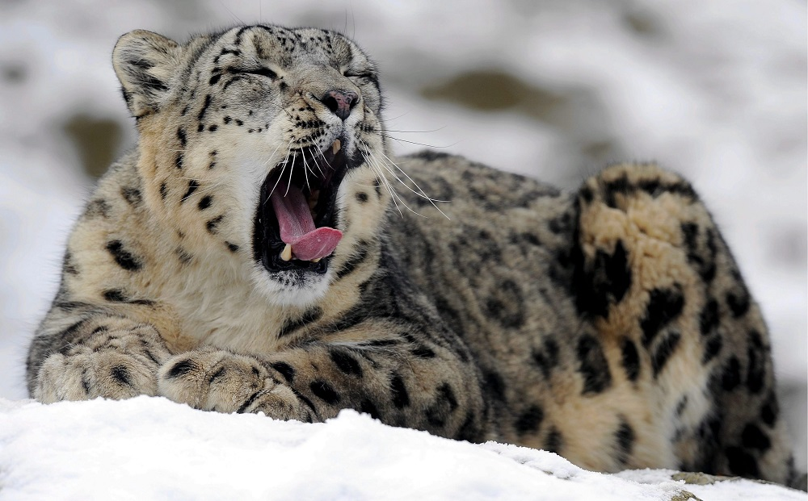
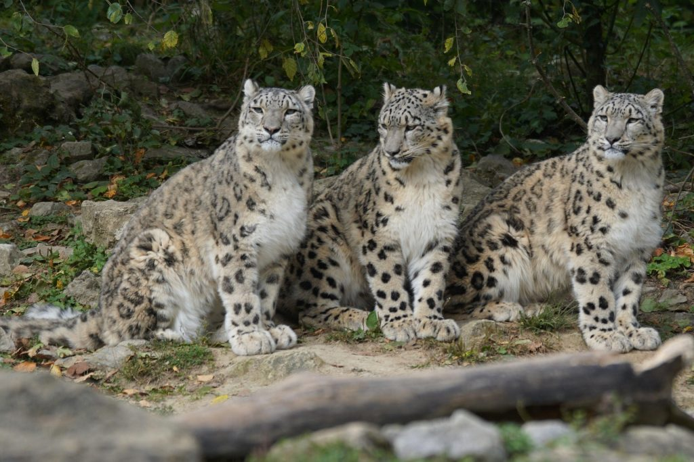

A hópárduc a ragadozók rendjébe és a macskafélék családjába tartozik. DNS-vizsgálatok alapján a macskafélék törzsfáján a hópárduc testvércsoportot alkot a tigrissel. Meg Közép-Ázsia hegyvidéki területein honos.
Testfelépítése

Tömege általában 35-55 kg. Hosszú farka arra való, hogy azzal egyensúlyoz a meredek lejtőkön és ha alszik, ezzel védi orrát és száját a rendkívüli hidegtől. Teste 100-130 cm hosszú, farka körülbelül 80-100 cm.
Életmódja
Éjszaka vagy alkonyatkor megy vadászni és ők a legmagasabban élő macskaféle. Többnyire magányosan él, a párzási időszak januártól március közepéig tart. Egyedül neveli a 2-3 kölykét, ritkán akár 7 is lehet. Általában 10-12 évig él, de fogságban a 21 éves kort is megérheti. Nem tud bögni a gepárdhoz hasonlóan.
Hópárduc populációja

- Kína: 4 500 példány
- Mongólia: 1 000 példány
- India: 516-524 példány